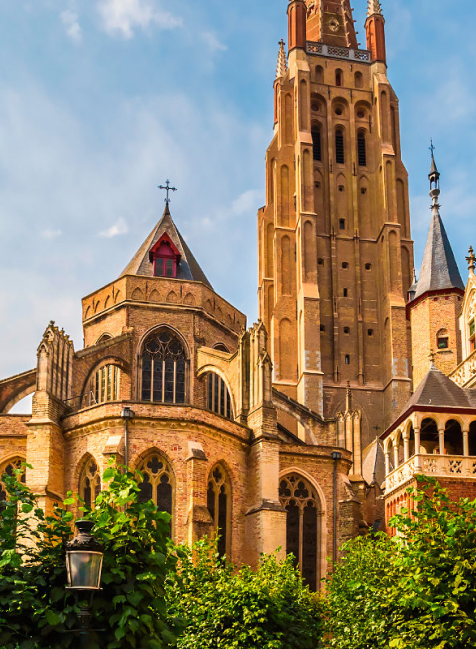

Доступные маршруты
маршрут #12


Церковь Богоматери
Церковь Богоматери (Onze-Lieve-Vrouwekerk) была построена в XII–XIII веках. Высота ее башни — 122 метра. Это самая высокая городская постройка.
В церкви находится мраморная скульптура «Дева Мария с младенцем» (1503—1505 гг.) работы Микеланджело. В 1468 году здесь состоялся II капитул ордена Золотого руна, на котором присутствовало 30 рыцарей. Их гербы размещены над скамьями. В церкви Богоматери похоронены герцог Бургундии и граф Фландрии Карл Смелый и его дочь Мария Бургундская. Их бронзовые надгробия выполнены в стиле пламенеющей готики.
Вход в церковь Богоматери бесплатный, но чтобы подойти к алтарю и посмотреть Мадонну Брюгге, нужно купить билет.